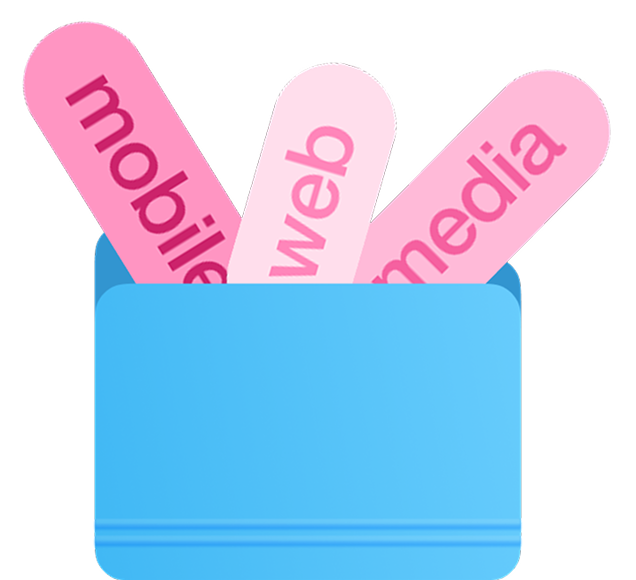

March – July 2026
The university ecosystem
UNISYNC — the university experience as one connected digital ecosystem — combining academic tools, campus services, and student life in a simple and intuitive mobile app
Hello!

My name is Polina
I’m a product and visual designer
with 4 years of experience
March – July 2026
UNISYNC — the university experience as one connected digital ecosystem — combining academic tools, campus services, and student life in a simple and intuitive mobile app